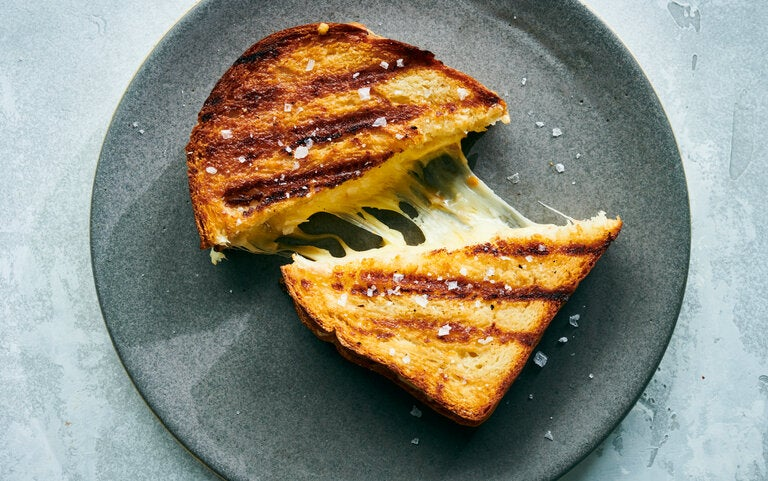

Grilled Cheese

A sandwhich made of cheese and bread, traditionally made using a stovetop to cook the ingredients
Ingredients
- 1 tablespoon of butter
- 2 slices of bread
- 1 slice of prefered cheese
Steps
- Butter the bread on one side and place the bread butter-side down on a hot skillet.
- Top with cheese, then place another slice of bread on top (butter-side up).
- Cook until the bottom slice is lightly browned, then flip.
- Continue cooking until the cheese is melted.